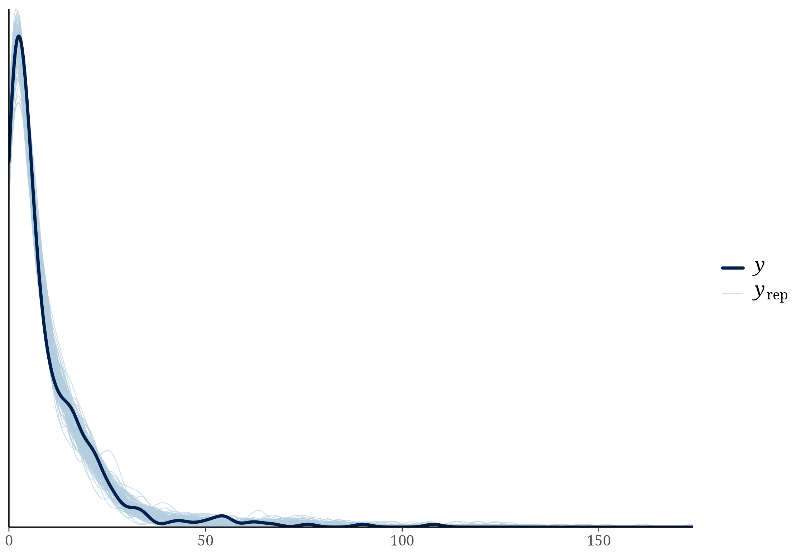

Show code
kable(h1_counts, row.names = FALSE, caption = "Verified complete-case H1 model frame.")| records | populations | species | reduction_from_main_records |
|---|---|---|---|
| 422 | 162 | 106 | 19 |
The provenance problem that initially blocked this preregistered H1 analysis has been resolved. The stored main climate variables came from CRU TS v4.09, not v4.10. After using that exact product and the empirically recovered locality-to-grid-cell map, both prespecified validation gates passed, the two within-season standard deviations were derived with the corrected cross-year convention, and the preregistered additive H1 model was fitted.
The complete-case H1 model frame contains exactly 422 records from 162 populations and 106 species: 15 of the 441 main-model records lack a breeding-season end month and four complete windows contain exactly one month, for which a within-season SD is undefined. Those 19 records are removed without imputation. Because this model uses different observations from the 441-record main models, it is reported separately and is not compared with them by LOO.
kable(h1_counts, row.names = FALSE, caption = "Verified complete-case H1 model frame.")| records | populations | species | reduction_from_main_records |
|---|---|---|---|
| 422 | 162 | 106 | 19 |
CRU TS v4.09 monthly temperature and precipitation were re-extracted for every complete-window, non-cross-year model-frame record dated 1982–1990. The validation scope excludes cross-year windows because the stored fields encode the historical same-year convention that is being corrected here. The extraction used the same 0.5-degree cells that reproduce the stored main climate series; this map is retained in models/climate_provenance/cru_ts_4.09_reconstructed_grid_mapping.csv. Full-season temperature was recomputed as the mean across breeding months and full-season precipitation as the sum. Absolute differences, rather than correlations, were used.
validation_display <- validation
validation_display$max_absolute_difference <- format(
validation_display$max_absolute_difference,
scientific = TRUE,
digits = 3
)
validation_display$mean_absolute_difference <- format(
validation_display$mean_absolute_difference,
scientific = TRUE,
digits = 3
)
kable(
validation_display,
row.names = FALSE,
caption = "CRU full-season reconstruction against stored values."
)| variable | n_records_compared | max_absolute_difference | mean_absolute_difference | n_difference_gt_0_001 | hard_stop_threshold | n_hard_stop_failures |
|---|---|---|---|---|---|---|
| temperature | 22 | 3.97e-09 | 1.22e-09 | 0 | 0.01 | 0 |
| precipitation | 22 | 4.79e-08 | 1.85e-08 | 0 | 0.10 | 0 |
The hard-stop thresholds were 0.01°C for temperature and 0.1 mm for precipitation. Both variables passed for all 22 comparison records: the maximum absolute differences were approximately \(4.0\times10^{-9}\)°C and \(4.8\times10^{-8}\) mm, respectively, and no record differed by more than 0.001. Therefore withinseason_climate_by_record.csv was created (TRUE).
kable(
derivation_summary,
row.names = FALSE,
caption = "Availability of within-season climate standard deviations."
)| derivation_status | n_records |
|---|---|
| complete | 422 |
| missing_start_or_end | 15 |
| one_month_sd_undefined | 4 |
For each population-year with at least two breeding months, tmp_withinseason_sd is the sample SD of monthly mean temperature and pre_withinseason_sd is the sample SD of monthly precipitation totals across the same named months. Four one-month seasons receive NA because an SD is undefined; 15 incomplete windows also remain NA. No climate values are imputed. These variables differ from br_tmp_withinyear_var, which is calculated across all 12 calendar months in the fixed 1961–1990 reference period.
For the 63 complete breeding windows that cross December–January, months from the reported start through December use the record’s climate_year, whereas January-side months use climate_year + 1. This is the biologically coherent calendar convention. The old same-year derivation and its fitted model remain unchanged in models/withinseason_models/ as a provenance audit, but are not used as the final H1 result. The corrected derivation changes full-season mean temperature by 0.258 degrees C on average (maximum 0.980 degrees C) and full-season precipitation by 87.7 mm on average (maximum 294.5 mm) across the 63 affected records.
kable(cross_year_summary, digits = 3, row.names = FALSE,
caption = "Effect of assigning January-side breeding months to the following calendar year.")| n_cross_year_records | n_cross_year_complete_derivations | mean_absolute_tmp_change_C | max_absolute_tmp_change_C | mean_absolute_pre_change_mm | max_absolute_pre_change_mm | convention |
|---|---|---|---|---|---|---|
| 63 | 63 | 0.258 | 0.98 | 87.656 | 294.5 | Jan-side months assigned to climate_year + 1 |
The verified variables enter the preregistered additive model as follows:
n_epp_broods | trials(n_broods_sampled) ~
tmp_withinseason_sd_z + pre_withinseason_sd_z +
recomputed_tmp_cru_C_full_season_z + recomputed_pre_cru_mm_full_season_z +
nest_box + marker_type +
(1 | population_id) + (1 | species_nonphylo) +
(1 | gr(species_phylo, cov = phylo_mat_fit))All four continuous climate predictors were standardized only after complete-case filtering on the final 422-record H1 model frame. All coefficients were retained and are reported below; no backward elimination was used.
The model used the same weakly informative priors as the main analyses: normal(0, 2) for the intercept, normal(0, 1) for fixed-effect coefficients, and exponential(1) for random-effect standard deviations and the beta-binomial precision parameter \(\phi\). Their literal equality to the priors_mu object in the main fitting script was verified automatically before sampling. Four chains were run for 10,000 iterations each (5,000 warmup), with adapt_delta = 0.99, max_treedepth = 15, and new seed 1901.
kable(h1_fit_counts, row.names = FALSE, caption = "Sample size used by the fitted H1 model.")| n_records | n_populations | n_species | reduction_from_main | n_cross_year_records | season_year_convention |
|---|---|---|---|---|---|
| 422 | 162 | 106 | 19 | 63 | Jan-side months use climate_year + 1 |
Posterior means, 95% credible intervals (CrI), and probability of direction (pd) are reported for every coefficient. Here pd is the larger of the posterior probabilities that the coefficient is above or below zero; it is descriptive, and no significance threshold is applied.
effect_labels <- c(
b_Intercept = "Intercept",
b_tmp_withinseason_sd_z = "Within-season temperature SD",
b_pre_withinseason_sd_z = "Within-season precipitation SD",
b_recomputed_tmp_cru_C_full_season_z = "Corrected full-season mean temperature",
b_recomputed_pre_cru_mm_full_season_z = "Corrected full-season total precipitation",
b_nest_boxyes = "Nest box: yes",
b_marker_typemicrosatellite = "Marker: microsatellite",
b_marker_typeSNP = "Marker: SNP",
b_marker_typeSNPs = "Marker: SNPs",
b_marker_typeother = "Marker: other"
)
h1_display <- h1_effects
h1_display$predictor <- unname(effect_labels[h1_display$term])
h1_display$predictor[is.na(h1_display$predictor)] <- h1_display$term[is.na(h1_display$predictor)]
h1_display <- h1_display[, c("predictor", "estimate", "lower", "upper", "probability_of_direction")]
kable(h1_display, digits = 3, row.names = FALSE,
caption = "All fixed-effect coefficients from the preregistered within-season H1 model.")| predictor | estimate | lower | upper | probability_of_direction |
|---|---|---|---|---|
| Intercept | -1.941 | -3.027 | -0.867 | 0.999 |
| Within-season temperature SD | -0.081 | -0.215 | 0.051 | 0.887 |
| Within-season precipitation SD | -0.040 | -0.174 | 0.095 | 0.721 |
| Corrected full-season mean temperature | 0.179 | -0.028 | 0.383 | 0.955 |
| Corrected full-season total precipitation | 0.008 | -0.185 | 0.202 | 0.531 |
| Nest box: yes | -0.286 | -0.824 | 0.248 | 0.855 |
| Marker: microsatellite | 0.316 | -0.050 | 0.700 | 0.954 |
| Marker: other | 0.425 | -0.666 | 1.508 | 0.782 |
| Marker: SNPs | 0.435 | -0.505 | 1.376 | 0.817 |
The within-season temperature-variability coefficient was -0.081 (95% CrI -0.215 to 0.051), and the within-season precipitation-variability coefficient was -0.040 (95% CrI -0.174 to 0.095). The corresponding full-season mean coefficients were 0.179 for temperature and 0.008 for precipitation. These four estimates jointly test the registered H1; their credible intervals, rather than a dichotomous significance rule, determine the strength and precision of the evidence.
All four climate coefficients had 95% CrIs that included zero. The corrected estimates were -0.081 (95% CrI -0.215 to 0.051) for within-season temperature SD, -0.040 (-0.174 to 0.095) for within-season precipitation SD, 0.179 (-0.028 to 0.383) for mean seasonal temperature, and 0.008 (-0.185 to 0.202) for total seasonal precipitation. Mean seasonal temperature had the clearest directional posterior (pd = 0.955), but its interval still included zero. Thus, this registered model provides no precise evidence that either the mean or within-season variability of breeding-season temperature or precipitation predicts EPP.
kable(h1_phi, digits = 3, row.names = FALSE,
caption = "Posterior beta-binomial precision parameter (phi).")| estimate | lower | upper |
|---|---|---|
| 23.914 | 17.932 | 31.082 |
kable(h1_diagnostics, digits = 2, row.names = FALSE,
caption = "MCMC diagnostics for the within-season H1 model.")| max_rhat | min_bulk_ess | min_tail_ess | divergent_transitions | treedepth_hits |
|---|---|---|---|---|
| 1 | 1160.91 | 1982.7 | 0 | 0 |
The maximum R-hat was 1.002, minimum bulk ESS was 1,161, minimum tail ESS was 1,983, and there were no divergent transitions or maximum-treedepth hits.
knitr::include_graphics("figures/withinseason_h1_corrected_pp_check.png")